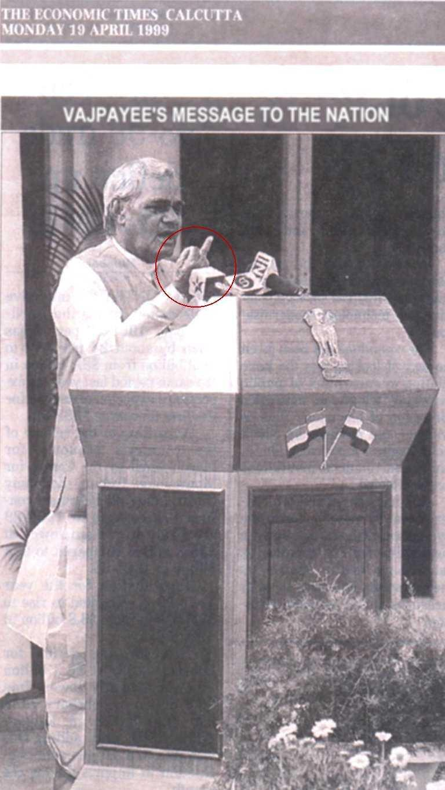

|
Site for Indian Exporters Hacked By Doctor Nuker |

|
doctornuker@puckoff.com |
 |
|
Mr_Sweet , AntiChrist , Devil-C , p4riah , PS911 , ALOC , Forpaxe , McIntyre , pr1sm , exode , weLLfaRe , 139_r00ted , ne0h , subartic , HiP , Legion 2000 , Xessor , mistuh clean , lyp0x , Da^Bomb , mozy , k0ld , Deicidal , HIT2000 , spinkus , bl0w team , an0nym0us , InSt|nCt , heataz , Sn1p3r , LYCOS__ , m0s , GForce , un1x b0wl1ng t34m , ULG , cult_hero , LevelSeven , v00d00 , Hi-Tech Hate , gH , syxx , s0ften , analognet , punkis , [Narcissus] , The DDT , attrition.org , hackernews.com , packetstorm.securify.com , projectgamma.com , net-security.org , zataz.com |